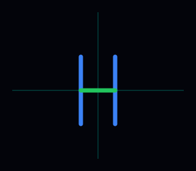

🎯 Mission 2 · 📐 Initials on a Grid
Initials on a Grid
🎯 Bonus mission — graph paper → coordinates → code
Sketch on graph paper, write each line as (x, y) points, then put those numbers in a letter function like draw_H() — each line is penup → goto → pendown → goto.
🎯 Your goal
Draw one letter from your initials in three steps: plan on graph paper, write the coordinates for each line, then code a function like draw_H().
Each line is the same pattern: pen up → goto(start x, start y) → pen down → goto(end x, end y). In turtle, (0, 0) is the center of the screen and y goes up.
Check each item when it is in your project — checked items fade and strike through:
When every box is checked, upload your code and screenshot to the class shared folder.
🕹️ What to do
- Pick one initial from your name (first or last letter).
- Graph paper: sketch your letter. Mark a dot where each line starts and ends.
- Write coordinates: for every line, fill in x1, y1 (start) and x2, y2 (end) in a table — use the H example below.
- Code it: copy
draw_H(), rename todraw_Y()(or your letter), and replace eachgotowith your numbers. - Run the starter example here, then run in your editor and fix anything that looks wrong.
- Add 2 colors and 2 comments.
- Upload your
.pyfile and screenshot to the class shared folder.
🧪 Open your editor — Python Sandbox (turtle), Trinket, Replit, or IDLE. One def draw_…(): with a pen-up / goto / pen-down block for each line is all you need.
📐 Step 2 · write your coordinates
Step 1 — graph paper: sketch your letter any size you like. Step 2 — table: for each line segment, write turtle coordinates (same system as the preview on the right).
In Python turtle, (0, 0) is the center of the screen. x goes left (−) and right (+). y goes down (−) and up (+).
Each line: start (x1, y1) → end (x2, y2). Those four numbers become two goto lines in your function.
Example tables — plan on graph paper, then use these numbers in draw_H() or draw_B():
H — 3 lines
| Line | x1 | y1 | x2 | y2 |
|---|---|---|---|---|
| left | -50 | -100 | -50 | 100 |
| middle | -50 | 0 | 50 | 0 |
| right | 50 | -100 | 50 | 100 |
B — 4 lines (lightweight block letter)
| Line | x1 | y1 | x2 | y2 |
|---|---|---|---|---|
| spine | -50 | -100 | -50 | 100 |
| top | -50 | 100 | 40 | 100 |
| middle | -50 | 0 | 40 | 0 |
| bottom | -50 | -100 | 40 | -100 |
📋 Starter example
Each line uses the same pattern: pen up → goto(start) → pen down → goto(end). Switch between draw_H() and draw_B() below — then copy the pattern for your own initial.
The coordinate plane matches Python turtle. Click Run example to draw letter H on the grid.

🔧 Try changing
- Change H to your initial
- Change the colors
- Add a second initial next to the first
- Add a dot, border, or title
- Make lines thicker or thinner with
t.width() - Try a diagonal line
📤 Submit your work
Upload your Python code and screenshot to the class shared folder.
- Submit your Python code (.py file)
- Submit a screenshot of your drawing
- Rename your screenshot to your first name (example:
alex.png)
Upload both files, then check the gallery on the main lesson page.